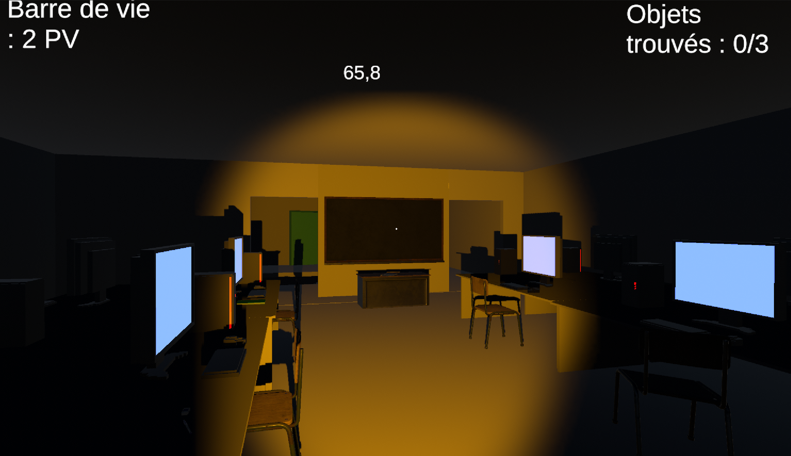
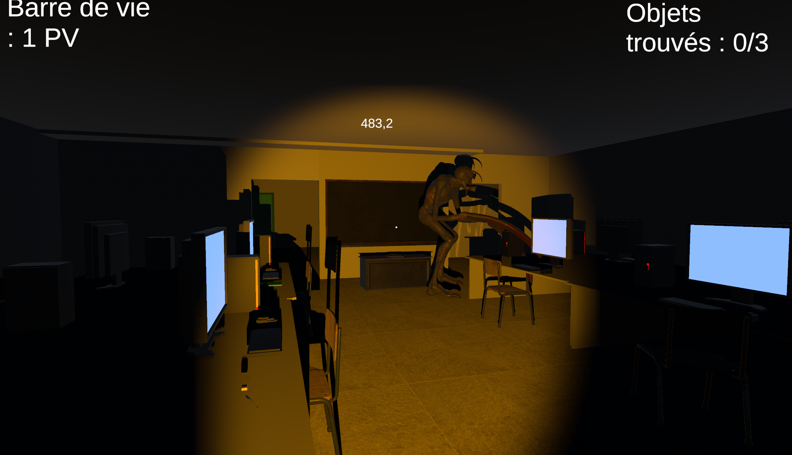
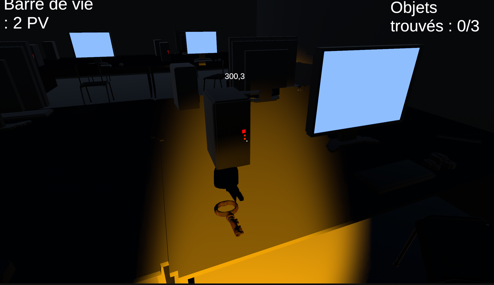
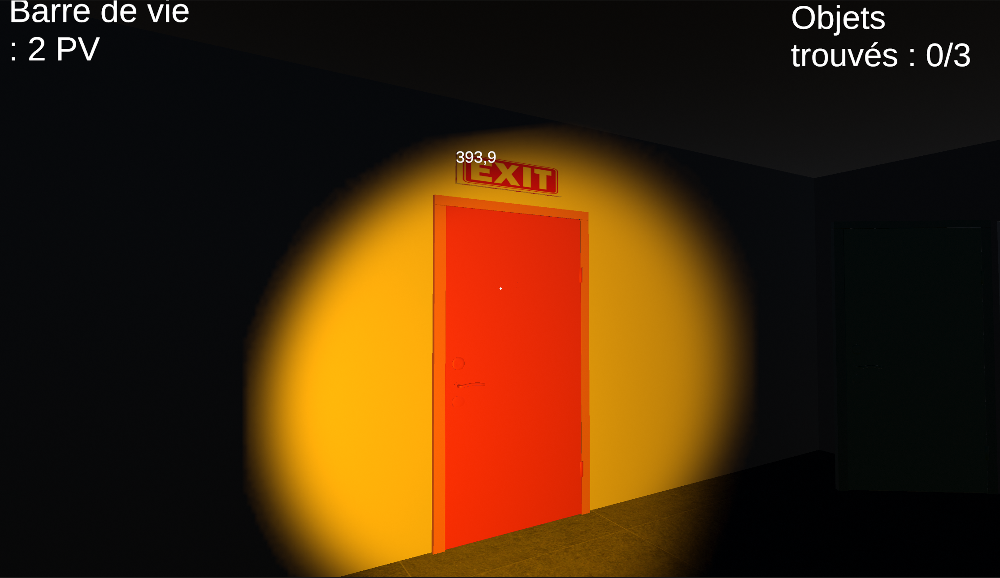
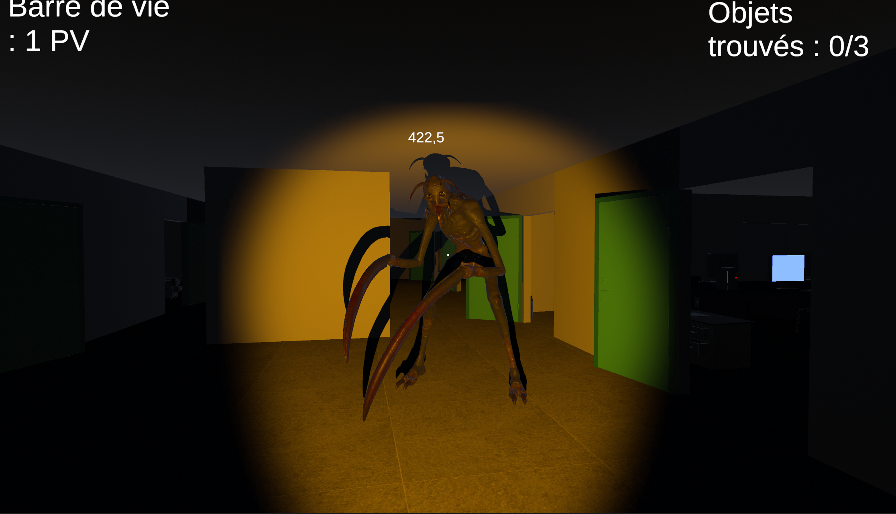

◆ GAME JAM · 24H · UNIVERSITÉ D'AVIGNON ◆
Louis Rives-Lehtinen
Licence Informatique — CERI Avignon
Erasmus — VUT Brno University of Technology
⬇ Télécharger mon CV
◆ GAME JAM · 24H · UNIVERSITÉ D'AVIGNON ◆
Licence Informatique — CERI Avignon
Erasmus — VUT Brno University of Technology
⬇ Télécharger mon CV◆ HORREUR · PREMIÈRE PERSONNE · UNITY ◆
Réalisé dans le cadre d'un évènement "24H pour coder" organisé par l'université d'Avignon, Une nuit au CERI est un jeu d'horreur à la première personne développé sur Unity par trois collaborateurs et moi-même. Le principal défi de cet évènement a été de se répartir les tâches efficacement dans un temps très limité.
Le principe du jeu est simple : le joueur se retrouve emprisonné dans le CERI (Centre d'Enseignement et de Recherche en Informatique) et doit s'en échapper en récupérant trois clés cachées, tout en évitant le monstre qui rôde dans les couloirs.
Cette expérience a marqué ma première utilisation de Unity, que j'ai découvert et appris au fil du projet. Mes principales tâches consistaient à gérer l'aspect graphique du jeu. J'ai commencé par remodéliser le CERI, en recréant ses structures et en veillant à représenter fidèlement l'environnement réel. Je me suis également chargé de concevoir et de placer les objets dans la scène, en réfléchissant à leur disposition pour équilibrer immersion et jouabilité. Une part importante de mon travail a été d'ajuster la luminosité et les effets d'éclairage, notamment en intégrant une lampe torche fonctionnelle pour renforcer l'atmosphère du jeu. Bien que j'aie conçu plusieurs éléments moi-même, certains assets ont été récupérés sur l'Unity Asset Store pour gagner du temps et garantir une cohérence graphique. Cette première expérience avec Unity m'a permis de développer mes compétences et de contribuer au projet de manière créative.
Principales caractéristiques :




